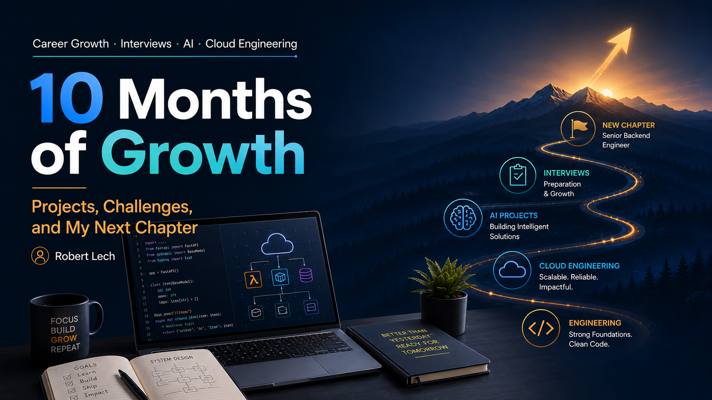

Career Growth · Interviews · AI · Cloud Engineering
10 Months of Growth: Projects, Challenges, and My Next Chapter
A retrospective on leaving Index Exchange, navigating technical interviews, building AI and cloud projects, and preparing for a new senior backend engineering role.
By Robert Lech · June 16, 2026 · 5 min read

Setting the Stage
After more than nine years at Index Exchange, I made the difficult decision in August 2025 to step away from a company and team that had shaped much of my professional life. Index was where I grew from an operations-focused engineer into a senior software engineer, worked on large-scale production systems, and learned many of the engineering habits that continue to define how I approach technical work.
Leaving was not a decision I made lightly. After nearly a decade in one environment, I felt it was time for a reset: to reflect on the kind of engineer I wanted to become next, to explore new technical directions, and to rebuild the routines and perspective I wanted to bring into the next stage of my career. This article discusses how the next 10 months would be a transformative period for my professional growth, encompassing a rigorous journey of technical interviews, hands-on open-source development, and continuous learning. From navigating challenging technical interviews and coding assessments, to building practical tools and deepening my cloud and AI expertise, this journey has been as much about the process as the outcome. This retrospective covers the lessons learned from those challenges and the projects that sharpened my skills, and will intentionally exclude other non-technical, personal moments.
A Self-Directed Sabbatical
After leaving Index Exchange, I took an intentional period away from the job market to reflect on my next direction. I explored whether returning to school to study mathematics was the right path for me, while also taking an AI Agents and Agentic AI Architecture in Python course and beginning a project around an AI-powered pipeline. The Piano Sheet Music Simplifier is an AI-assisted Python pipeline that analyzes MusicXML, prompts an OpenAI model to generate a structured simplification plan, validates that plan, rewrites the MusicXML deterministically, and renders beginner-friendly piano sheet music. This opportunity gave me space to reconnect with learning, experiment with new technical ideas, and better understand the kind of work I wanted to pursue next.
The Job Searching Experience
After this period, I took some time to focus on myself, my family, and my friends, while slowly getting back into the job market. I primarily used Indeed and LinkedIn Learning to discover job opportunities, both of which were highly effective in generating responses. To stay organized, I utilized Teal to track all my job applications throughout the entire process. I used its paid feature to help generate customized resumes for jobs which, although still a little time-consuming, gave me the confidence that I was giving my 100% in my first impressions.
The Technical Interviews
During this journey, I engaged with several companies that tested different facets of my engineering toolkit:
- System Design: Video calls focused on designing complex APIs, including remote activation systems and safe data transfer protocols across services.
- Coding Challenges: Live sessions involving algorithm implementation, like LRU caches, database pagination design, and various LeetCode-style assessments.
- Take-Home Assignments: Offline projects, including building a web-scraping application to track real-time data changes.
- Code Review: Only one code review, which involved spotting a risky mutation during iteration and explaining the downstream impact.
What I Did Well
Reflecting on these sessions, I identified several core strengths:
- High-Level Design: I successfully applied resource-focused strategies during API design, tackling problems at a high level and maintaining a structural approach.
- Adaptability: During offline projects, I tackled tasks outside my core expertise, such as web-scraping, and reconstructing deltas.
- Diagnostic Skills: I demonstrated quick identification of core bugs during code reviews, effectively spotting logic errors during iteration.
Areas for Improvement
While there were many successes, these experiences highlighted critical areas for refinement:
- Technical Detail: I sometimes get bogged down in minor details or overlook key stability issues, particularly when working with external systems in API design.
- Articulation: I need to practice explaining the "why" and "how" behind code fixes. I found that explaining the impact of a bug is just as important as identifying it.
- Stress Management: Avoiding panic during live walkthroughs is critical. Clear communication of thought processes is essential, even when under pressure. A reminder that there's always time to think about possible options before confirming that one option is the way to go forward.
Technical Growth & Upskilling
During the interview prep, I suspected my response rate felt a little low in the beginning. When asking around, I got feedback that since I had no public cloud experience, that could be a factor in determining whether I was "a bit behind on the times". All of this is covered in my previous blog Moving a Containerized Flask App to AWS . In the blog I describe how the lack of experience motivated me to take the AWS Cloud Technical Essentials course offered by Amazon Web Services to fill that gap. Moreover, to really show some concrete learnings, I then took one of my open source projects, the Course Enrollment App , and designed and deployed it onto AWS using ECS Fargate, ALB, ECR, SSM Parameter Store, GitHub Actions CI/CD, and AWS CDK for infrastructure as code. This gave me the confidence that I had the mature experience to design and deploy systems to the cloud.
Additionally, to keep my Go programming skills strong as my primary server-side programming language, I completed the Programming with Golang course offered by Edureka.
The Next Chapter
With all the effort put into this job hunting experience, I am pleased to announce that I will be joining Achievers as a Senior Software Engineer (Backend Engineering) starting June 22. After spending over nine years at Index Exchange, I'm excited for this next chapter: learning a new product domain, strengthening my backend, API, and cloud engineering skills, and contributing to data intelligence systems that help organizations better understand and improve the employee experience. Although I feel a little nervous entering a new environment, I trust in my experience that I'll be a strong individual contributor and a mentor for other more junior engineers.
Back to Blogs